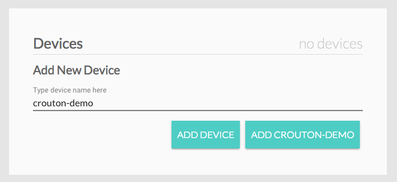
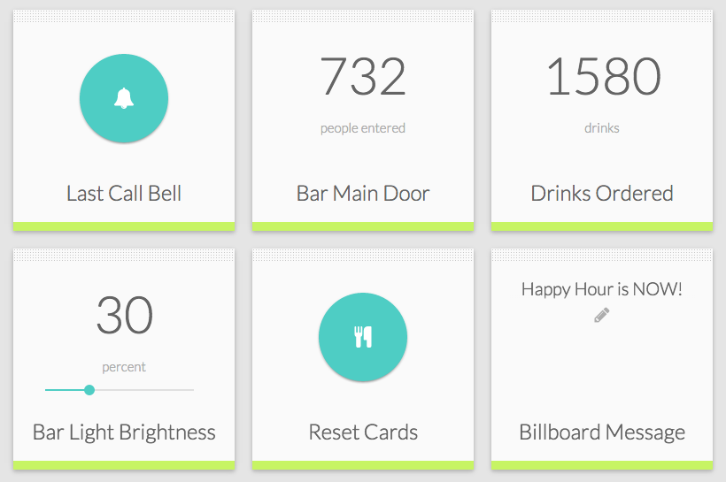

<link rel="import" href="../static/common/bower/polymer/polymer.html"/>
<link rel="import" href="crouton-card.html"/>
<dom-module id="crouton-getting-started">
  <template>
    <link rel="stylesheet" href="../css/crouton-getting-started.css"/>
    <crouton-card bottom-bar="false" class="banner grid__col grid__col--12-of-12">
      <div class="grid__col grid__col--3-of-12"></div>
      <div class="titleDiv grid__col grid__col--9-of-12">
        <div class="mainTitle">Crouton</div>
        <div class="subTitle">A dashboard that taps into your IOT network</div>
        <div></div>
      </div>
    </crouton-card>
    <crouton-card bottom-bar="false" class="grid__col grid__col--12-of-12">
      <div class="descpCard grid__col grid__col--6-of-12">
        <div class="text24">Crouton is a dashboard that lets you visualize and control your IOT devices with minimal setup. Essentially, it is the easiest dashboard to setup for any IOT hardware enthusiast using only MQTT and JSON.</div>
      </div>
      <div class="descpCard grid__col grid__col--3-of-12">
        <li>Makes IOT devices easy to use</li>
        <li>No frontend knowledge needed</li>
        <li>Flexible for wide variety of devices</li>
        <li>Compatible with devices that use MQTT</li>
        <li>Easy to use interface</li>
        <li>It is FREE!</li>
      </div>
      <div class="grid__col grid__col--3-of-12">
        <paper-button data-page="gettingStarted" on-click="gotoGithub">View on Github!</paper-button>
        <paper-button on-click="gotoDocumentation">See Documentation</paper-button>
      </div>
    </crouton-card>
    <crouton-card drop-shadow="false" bottom-bar="false" class="grid__col grid__col--12-of-12">
      <div class="contentMarginFix grid grid__col grid__col--4-of-12">
        <p class="header">Connect to Demo Device</p>
        <p>The demo device is a simulated use case at a local bar. The details are below if you would like to manually connect or just hit the button for it to connect automatically.</p>
        <p>MQTT Broker (currently default): <br/><b>test.mosquitto.org:8080</b> <br/> Device Name: <br/><b>crouton-demo</b></p>
        <p><br/></p>
        <paper-button on-click="demoCrouton" class="centerBtn">Connect demo for me</paper-button>
        <p><br/>
          *The changes to the demo device are <b>real and persistent</b>. We try to keep the demo up, but it does come down sometimes unfortunately.
        </p>
      </div>
      <div class="grid__col grid__col--8-of-12">
        <p class="header">Using Crouton</p>
        <div class="contentMarginFix grid grid__col grid__col--12-of-12">
          <div class="contentMarginFix grid grid__col grid__col--6-of-12"></div>
          <div class="grid grid__col grid__col--6-of-12">
            <p><b>1: </b> On the <a on-click="goToConnection">Connections</a> page, enter your MQTT broker details along with a unique name for Crouton</p>
          </div>
        </div>
        <div class="contentMarginFix grid grid__col grid__col--12-of-12">
          <div class="contentMarginFix grid grid__col grid__col--6-of-12"></div>
          <div class="grid grid__col grid__col--6-of-12">
            <p><b>2: </b> On the same page, enter the name of the device(s) you want to connect</p>
          </div>
        </div>
        <div class="contentMarginFix grid grid__col grid__col--12-of-12">
          <div class="contentMarginFix grid grid__col grid__col--6-of-12"></div>
          <div class="grid grid__col grid__col--6-of-12">
            <p><b>3: </b> Once your device connects, the description and status will show up.</p>
          </div>
        </div>
        <div class="contentMarginFix grid grid__col grid__col--12-of-12">
          <div class="contentMarginFix grid grid__col grid__col--6-of-12"></div>
          <div class="grid grid__col grid__col--6-of-12">
            <p><b>4: </b> Head over to the <a on-click="goToDashboard">Dashboard</a> page to interact with your devices!</p>
          </div>
        </div>
      </div>
    </crouton-card>
    <crouton-card drop-shadow="false" bottom-bar="false" class="grid__col grid__col--6-of-12">
      <p class="header">Sample Code for Devices</p>
      <p>We have demo code for Python and ESP8266. Feel free to use the code as starter code for your own projects.</p>
      <p class="header">Python Device</p>
      <p>This demo uses the <a target="_blank" href="http://www.eclipse.org/paho/">paho-mqtt</a> library and is very similar to the online crouton-demo. It has most of the cards available in the demo. The two simple-text cards will update every 5 seconds (one is consistent and one has added randomness). The device name will be printed on each start and is randomized to reduce name clashing.</p>
      <p>A virtualenv will be inclue in the repository which includes Python 2.7 and the necessary packages. Use the following to start the virtualenv. More about <a target="_blank" href="http://docs.python-guide.org/en/latest/dev/virtualenvs/">Python virtualenv</a></p>
      <div class="contentBox">source env/bin/activate</div>
      <p>Files are on <a target="_blank" href="https://github.com/edfungus/Crouton/tree/master/clients/python_clients">Github</a></p>
      <div>
        <p></p>
      </div>
      <p class="header">ESP8266 Device</p>
      <p>This demo is written in LUA and tested on an ESP8266-12. There is one togglable light (pin 14) and one dimmable light (pin 12). The device name starts with "crouton-esp1-" and is appended with the chipid so that there will be less naming conflicts. Feel free to change it to whatever you like.</p>
      <p>Be sure to change the wifi config in init.lua! The Crouton configurations are in the top of main.lua</p>
      <p>Files are on <a target="_blank" href="https://github.com/edfungus/Crouton/tree/master/clients/esp8266_clients">Github</a></p>
    </crouton-card>
    <crouton-card drop-shadow="false" bottom-bar="false" class="grid__col grid__col--6-of-12">
      <p class="header">Setup your own devices?</p>
      <p>Use the demo code to get a jump start and check out the <a target="_blank" href="/documentation">documentation</a> for more details and options! It is really simple and only requires your device to use MQTT and JSON!</p>
      <p><a href="http://adventureswithedmund.com/post/136520173664/rgb-led-esp8266-with-crouton" target="_blank">RGB Led on ESP8266 guide</a></p>
    </crouton-card>
    <crouton-card drop-shadow="false" bottom-bar="false" class="grid__col grid__col--12-of-12">
      <p class="header">Hi, thanks for stopping by!</p><br/>
      <p><b>Crouton</b> started from the realization that many IOT devices will need an online interface to be truly usable. Rather than having individual interfaces for each device, it makes sense to create an interface that can dynamically change to fit the need of any IOT device. As a result, Crouton is a flexible interface with many dashboard visualizations and control options for a variety of IOT device needs. Utilizing MQTT and JSON standards, Crouton functions in a resilient distributed system by connecting as a MQTT client itself</p>
      <p>I hope Crouton can help propel your next project. Feedback and suggestions are always welcomed!</p>
      <div>
        <p></p>
      </div>
      <p>Edmund <br/> edmundfung@live.com</p>
    </crouton-card>
  </template>
  <script>
    (function() {
      Polymer({
        is: "crouton-getting-started",
        gotoGithub: function(){
          window.open("https://github.com/edfungus/Crouton", "_blank");
        },
        goToConnection: function(){
          this.fire('crouton-changePage', {"page": "connections"});
        },
        goToDashboard: function(){
          this.fire('crouton-changePage', {"page": "dashboard"});
        },
        gotoDocumentation: function(){
          window.open("/documentation",'_blank');
        },
        demoCrouton: function(){
          this.fire('makeToast', { message: "Ok, hang tight!", duration: 2000, status: "exclamation-circle" });
          this.async(function(){
            this.fire('makeToast', { message: "Going to <b>Connections</b> page", duration: 2000, status: "exclamation-circle" });
            this.async(function(){
              this.async(function(){
                this.goToConnection();
                document.getElementById("crouton-mqtt").connectBroker();
                this.async(function(){
                  this.fire('makeToast', { message: "Connected broker, now connecting <b>crouton-demo</b>", duration: 2000, status: "exclamation-circle" });
                  this.async(function(){
                    document.getElementById("crouton-devices").addDemo();
                    this.async(function(){
                      this.fire('makeToast', { message: "Going to <b>Dashboard</b> page", duration: 2000, status: "exclamation-circle" });
                      this.async(function(){
                        this.goToDashboard();
                        this.async(function(){
                          this.fire('makeToast', { message: "Have fun! Don't forget other people can see your changes!", duration: 5000 });
                        }, 1000);
                      }, 1500);
                    }, 2000);
                  }, 2000);
                }, 3000);
              }, 1000);
            }, 2000);
          }, 2000);
        },
      });
    }());
  </script>
</dom-module>